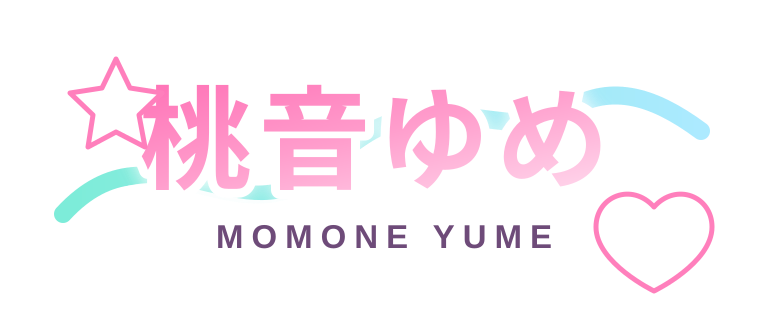
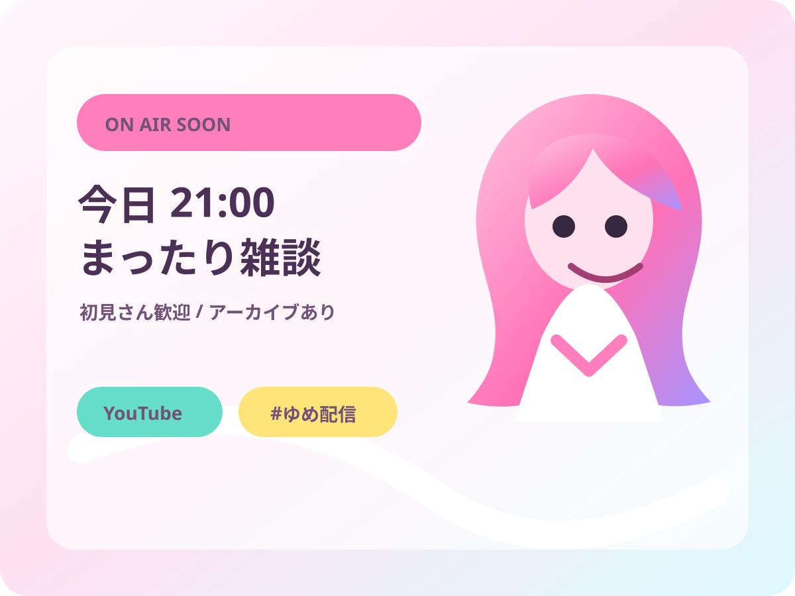
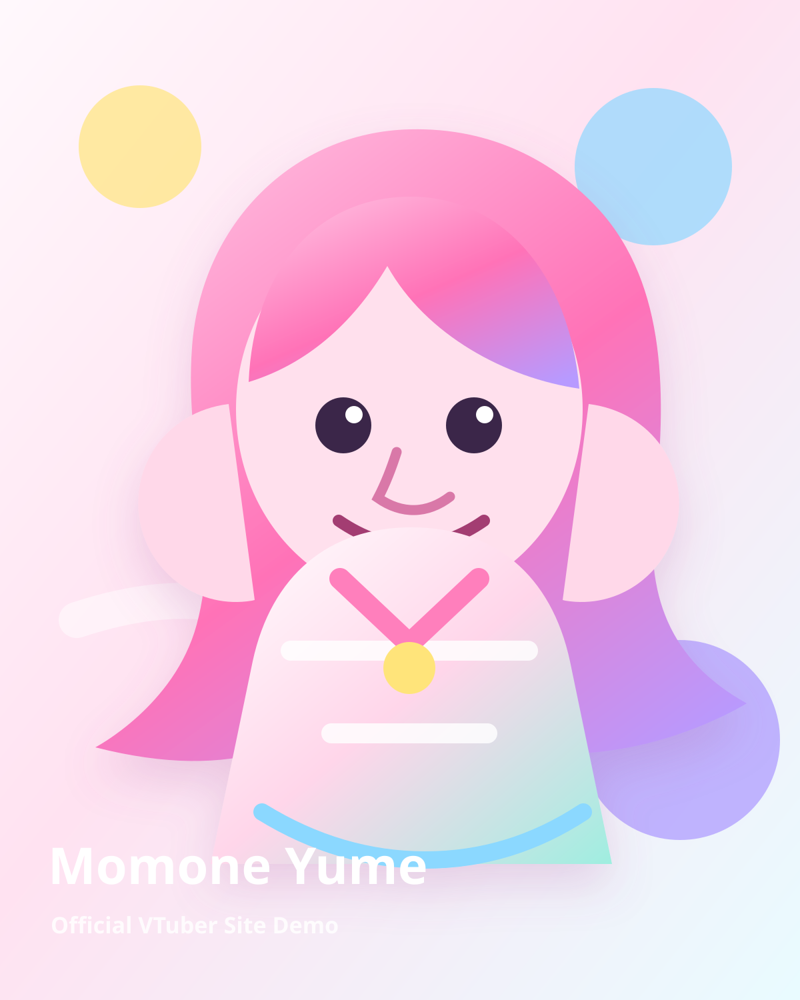
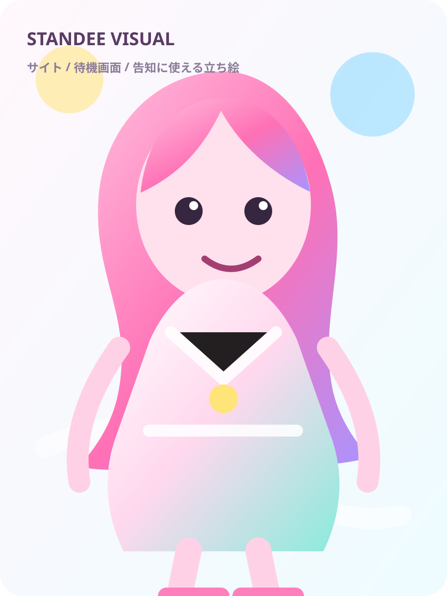
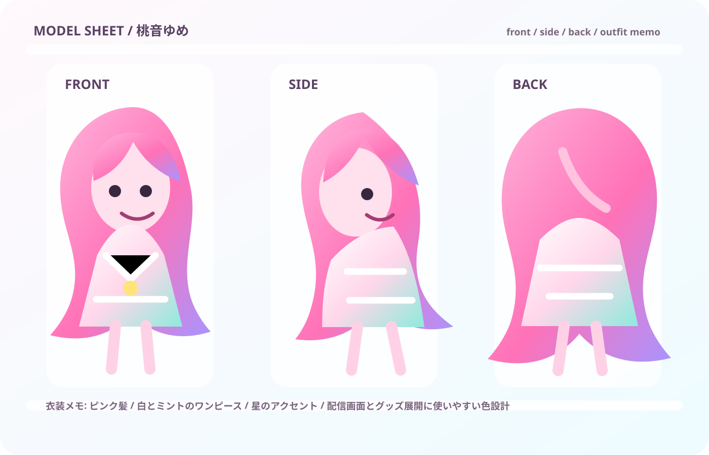
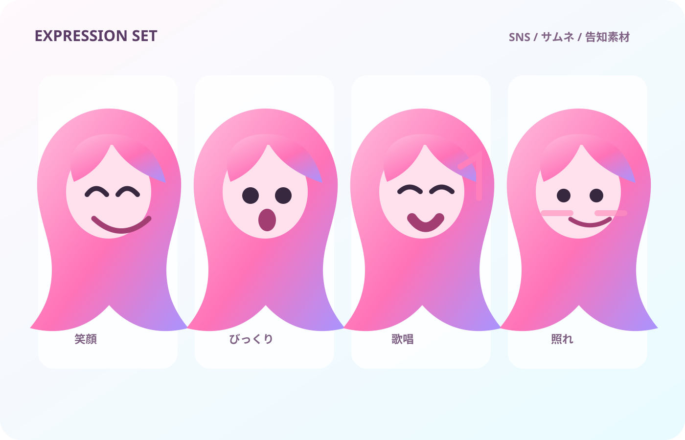
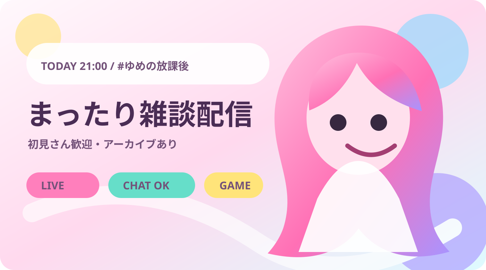
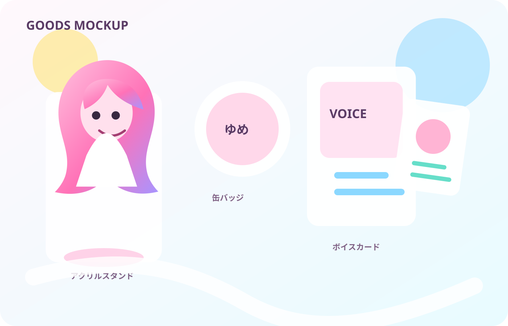

今週の配信予定を更新
定期配信、コラボ、歌枠、アーカイブ導線をまとめて確認できます。
ON AIR SOON / 活動中VTuber向け公式サイトデモ

配信、アーカイブ、グッズ、SNS、案件相談がばらばらになりがちな活動中VTuber向けに、今の活動をもっと見やすく、もっと推しやすく、もっと仕事につながる形へ整えます。

今日の配信は21時！
グッズ再販のお知らせあり
案件相談フォーム受付中
お知らせ
定期配信、コラボ、歌枠、アーカイブ導線をまとめて確認できます。
アクスタ、缶バッジ、ボイス販売など、販売前から期待を作れます。
企業案件や制作相談の入口を、活動ページ内に自然に置けます。
Profile
桃音ゆめは、雑談、ゲーム、歌枠、グッズ展開を中心に活動するピンク髪の女の子VTuber。初見さんが入りやすく、常連さんが追いやすく、企業担当者が相談しやすい場所を作ります。

Character Assets

プロフィール、告知、待機画面に使える素材。

衣装差分やグッズ制作相談の説明用。

SNS投稿、サムネ、配信告知に使用。

左側に配信タイトルを載せる想定の告知素材。
配信予定
近況、今週のお知らせ、アーカイブ導線をまとめます。
推し活リンクへ参加ルールやコメントルールも事前に整理。
セットリスト、リクエスト、アーカイブ導線を掲載。
推し活リンク
Goods & Voice

アクスタ、缶バッジ、カード、ボイス販売などを、サイト上で一目で伝えられます。
Contact
PR配信、イベント出演、歌ってみた制作、グッズ制作、公式サイト制作など、相手が何を相談すればいいか迷わないフォーム導線を用意します。